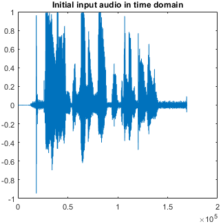
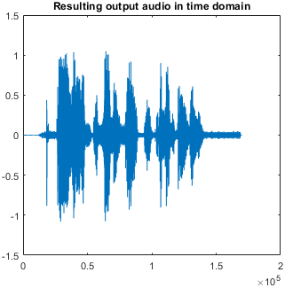
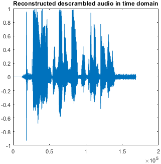
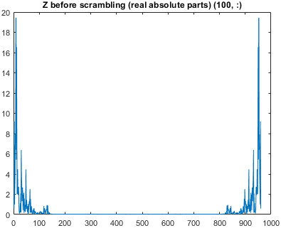
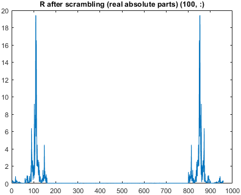
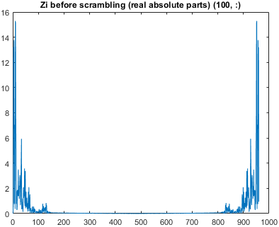
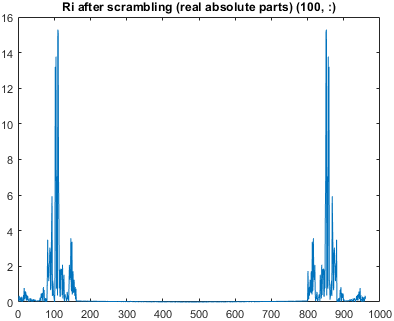

Variant: Only move around freqs from 1:160 and 801:960.
Image resolution for plots: 80
Fs = 48000, Fc = 0.29167
n = 169303, 169920, 169920 for input, scrambled, and reconstructed audio respectively.
temp1(1:160) = temp1([101:120 81:100 141:160 121:140 21:40 1:20 61:80 41:60]);temp1(801:960) = temp1([901:920 881:900 941:960 921:940 821:840 801:820 861:880 841:860]); |  |  |
 |  | |
 |  |